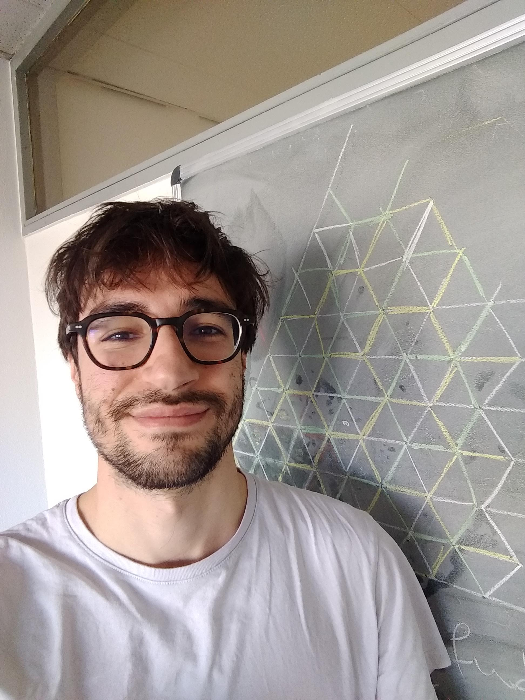

Contact
name.surname(at)math.uni-freiburg.deOffice 419, Mathematisches Institut
Albert-Ludwigs-Universität Freiburg
Ernst-Zermelo-Straße 1
79104 Freiburg im Breisgau, Germany
I am a Research Assistant (of Prof. Wolfgang Soergel) at the
University of Freiburg.
In the academic year 2020/21 I was a Junior Fellow at FRIAS
I'm also member of the GK1821: Cohomological Methods in Geometry.
Before coming to Freiburg, I was a PostDoc at MSRI, Berkeley, during the semester Group Representation Theory and Applications.
I completed my PhD in January 2018 at the Max Planck Institute, Bonn, under the supervision of Geordie Williamson.
My CV.
Research Interests
My research area is called Geometric Representation Theory.
I enjoy thinking primarily about aspects of representation theory that can be "seen" geometrically.
I am particularly interested in the following topic:
- Hecke algebras and their categorification via Soergel bimodules
- Kazhdan-Lusztig Combinatorics
- Perverse sheaves
- Hodge Theory
- Flag manifolds and the geometry of Schubert varieties
- Koszul Duality
- Affine Grassmannians and Geometric Satake Correspondence
- Quantum groups and KLR algebras
- Nilpotent Orbits and Springer Correspondence
- Representations of Algebraic Groups